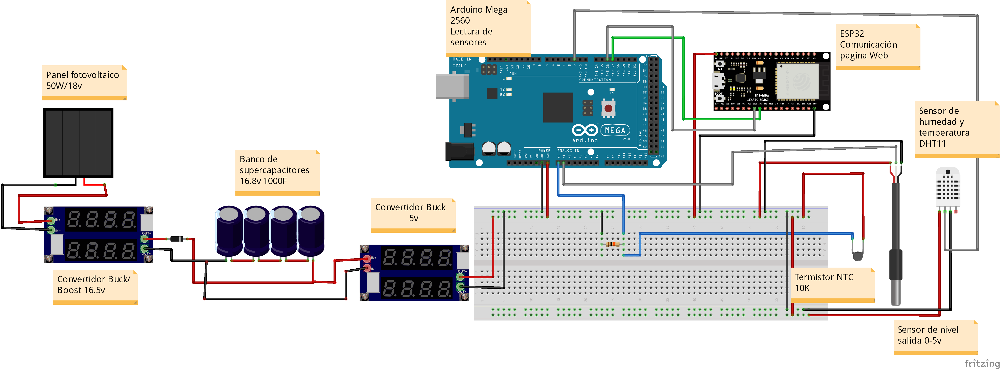

PRODUCTOS O SERVICIOS PARA EMPRENDIMIENTO DE BASE TECNOLOGICA
Sistema de Monitoreo Multivariable para Cuerpos de Agua Dulce alimentado mediantes paneles fotovoltaicos y Supercapacitores

Se trata de un sistema que monitorea variables fisicas de cuerpos de agua dulce de manera inalambrica enviando a un servidor en la red los datos para posteriormente ser visualizados en una pagina Web, la energía para su funcionamiento es recabada por medio de paneles fotovoltaicos y que posteriormente es almacenada en supercapacitores.



Contacto
Marcos Abdiel Peña Hernández A01412248@tec.mx 833 322 77 65